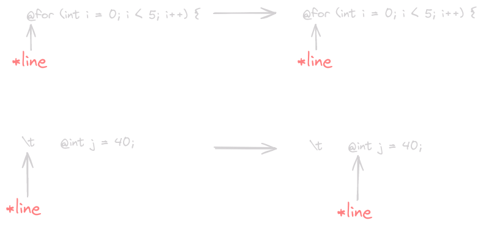
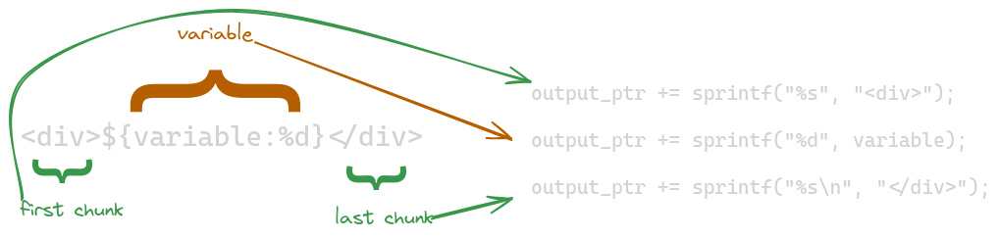
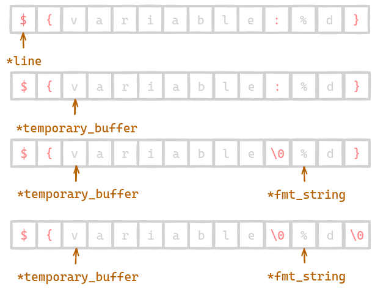
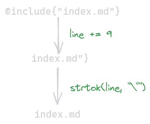

Building a Text Templating System in C
Inspired by this for the implementation and this for the syntax.
Introduction
When working with files it is often advantageous to use a template, that can simply be filled in with the necessary information at runtime. This concept applies to HTML templating for web programming, filling in an invoice for clients, or as simple as filling in the correct date on a Markdown document. The implementation discussed here is viable for any text templating, because we leave the use case up to the user, giving them the primitives to build what they need.
At a basic level we want to allow the user to fill in variable values, execute code, and include other templates. This allows the user to create as complex or as simple of an output text file as they need.
We are essentially building a “compiler” for our templates, which generates code that is run to generate the output template. I wouldn’t exactly consider this a compiler, but it does parse the source file and generate code based upon its contents. Our implementation is written in C, and will generate C code, but these concepts can be ported to any source language, generating code for any destination language.
The biggest reason why we are building this as a code generation tool is so that the expensive parsing is only done once, with the runtime cost to fill in a template being relatively small. If we had to parse a template a runtime we’d lose the speed benefit. Parsing at runtime is also no different from a giant call to printf, where each variable has to be passed in the correct order. Lastly, generating code gives us type safety, ensuring that every variable in the template is present when the final program is compiled. We will see how we can implement this type safety in 2 different ways.
Ground Work
As we discussed before, we have 3 basic ways that a user can augment their template files. Let’s take a look at a basic template. By the end our template engine should have no trouble parsing this.
<!doctype html> <html class="no-js" lang=""> <head> <meta charset="utf-8"> <link>${testing:%s}</link> <style> body { background-color: #1a1a1a; /* Dark background color */ color: #ffffff; /* Light text color */ } </style> </head> <body> <div>Hi Mom! My name is ${name:%s} ${last_name:%s}</div> @for(int i = 0; i < 10; i++) { <div>${$i:%d}</div> @} <pre> @include{"index.md"} </pre> ${$sqrt(32):%f} </body> </html>
Basic Output
The majority of lines in a template file will be just that, text. We don’t want to mess with these lines, so we can output them directly.
Filling in Variables
In order to be a template there has to be some concept of “variables”, which are dynamically filled in based on the values at runtime. We will surround these variables with ${}, which serves as a landmark for our parser. We can see this on the line <div>${$i:%d}</div> Everything inside this marker will be treated as a variable, and the value will make its way into the final output. The user also specifies a format string to tell the template how the variable should be represented as a string.
Executing Code
If we stop here we would already have a templating system, but it wouldn’t be too far from a static file. We can expand upon this by allowing the user to execute any arbitrary code in the output language. For our implementation that means executing any C code. Any line whose first non-whitespace character is a ’@’ will be treated as a line of C code.
A timeline of posts on something like reddit needs to render one “card” for each post, which we can accomplish by looping over a set of input data and generating a card for each.
@for (int i = 0; i < posts.len; i++) {
@post p = posts.get(i);
<div>
<span>${$p.title:%s}</span>
<span>${$p.author:%s}</span>
<div>${$p.body:%s}</div>
</div>
@}
Our first implementation will try to be as hands off as possible, so we won’t worry about handling the case where the user wants to print ${array[i]:%d} We will see how to handle this later.
Here we used the syntax ${$var:%d}, where the second $ indicated that this is a local varaible. This tells our template engine to not worry about adding the identifier to our list of parameters.
Including Templates
The last step to creating a fully featured templating system is to allow the importing of other templates. If a component or block is used across multiple templates, or potentially even multiple times in the same template it makes sense to break that out into its own template. We want to embed these templates into our root template so that all the data that a template and its descendants need is present at compile time.
Generating Code
In order for our templates to work at compile time they will need to generate code in our desired language. We will output this generated code to a header file, which the user can then import in to their application. Let’s look at a very basic template and the code we want it to generate.
This is a normal line, it should be left unchanged
@// This is a comment in C, which will not be executed
@for (int i = 0; i < 5; i++)
${$i:%d}
@}
${variable:%s}
We want our template engine to generate the following…
char *test_txt(const char* variable) { char *buf = (char*)malloc(4096); char *buf_ptr = buf; buf_ptr += sprintf(buf_ptr, "%s\n", "This is a normal line, it should be left unchanged"); // This is a comment in C, which will not be executed for (int i = 0; i < 5; i++) { buf_ptr += sprintf(buf_ptr, "%d", i); } buf_ptr += sprintf(buf_ptr, "%s", "\n"); buf_ptr += sprintf(buf_ptr, "%s\n", variable); return buf; } int main() { char *variable = "Hi!"; char *output = test_txt(variable); printf("%s", output); free(output); }
This is a normal line, it should be left unchanged 01234 Hi!
The function test_txt gets its name from the file that was used to generate it. In order to ensure a valid function name in C, all non-alphabetic characters are replaced with underscores. As you can see any line beginning with @ is translated directly to C code, with the remaining lines having their string representation appended to the output buffer.
There are a lot of things to keep track of while parsing the template, so to simplify our job as much as possible we will work with the file line-by-line. At each line we will scan character by character, making a decision based upon what we see. Let’s look how this will work in our code.
Parsing a Template
To read a file line-by-line in C we can use a handy function in the standard library called getline. This function reads input from a file descriptor, returning once it reaches a new line. The input is placed in a buffer for us, and we are given the number of characters that were read.
Our first step is to open a file, and create a buffer for it to read in to. At the same time we will also create a buffer where we will build up our function.
The function we are going to generate needs to be able to write its output into a buffer that can be returned. We will worry about the opening and closing lines of the function elsewhere, for now we will create the buffer it can write in to. Things do get a bit confusing here, we are going to have a buffer in our generation state, and a buffer at runtime, try to not get the 2 confused.
// Returns a new buffer with the function body // Must be freed char *template_to_function(const char *const file) { FILE *fp = fopen(file, "r"); if (!fp) { perror("fopen"); return NULL; } char *function_buffer = calloc(sizeof(char), 4096); char *fb_ptr = function_buffer; if(!function_buffer) { perror("calloc"); return NULL; } fb_ptr += sprintf(fb_ptr, "char *output_buffer = (char*)malloc(4096;\n)"); fb_ptr += sprintf(fb_ptr, "char *output_ptr = output_buffer;\n"); char *input_line = NULL; size_t len = 0; ssize_t read; int pos; while ((read = getline(&input_line, &len, fp)) != -1) { char *line = line_input; line[read - 1] = '\0'; // Removing the trailing newline // Parse Line // Handle @ symbol // Handle Line } free(input_line); fb_ptr += sprintf(fb_ptr, "\treturn output_buffer;\n"); fclose(fp); return function_buffer; }
Parsing @ Lines
Now we are set up to begin parsing the template. The easiest thing to parse is a line of code, so we will start there. Note that we are using labels here to make it easier to follow along with the article, they are not needed in the final code.
// Returns the position of the first non `@` character, // or -1 if it does not exist int code_line_p(char *line) { int pos = 0; while (line[pos] == ' ' || line[pos] == '\t') { ++pos; } if (!line[pos] || line[pos] != '@') { return -1; } else { return pos + 1; // One past the `@` } } // Inside the function above // Parse Line // Handle @ symbol if ((pos = code_line_p(line)) != -1) { // Line of code, append it! fb_ptr += sprintf(fb_ptr, "%s\n", line + pos); continue; } // Handle Line

Our program should now be able to recognize lines that begin with @, which it appends to the function. Let’s see what it can generate at this point. We will create a main function that calls template_to_function and prints out the result.
int main() { puts(template_to_function("test.input")); }
<!-- test.input --> @for (int i = 0; i < 5; i++) { <span>Hi mom!</span> @}
char *output_buffer = (char*)malloc(4096); char *output_ptr = output_buffer; for (int i = 0; i < 5; i++) { } return output_buffer;
Exactly what we expected! We can see our buffer initialzation, followed by C code directly in the resulting function. Except for one problem, this isn’t a function yet. Let’s fix that.
// convert_filename removes non-alphabetic chars replacing them with `_` // Returns a new string with the converted name must be freed char *convert_filename(const char *const filename) { char *converted = strdup(filename); for (int i = 0; converted[i]; i++) { if (!((converted[i] >= 'a' && converted[i] <= 'z') || (converted[i] >= 'A' && converted[i] <= 'Z'))) { converted[i] = '_'; } } return converted; } void generate_function(const char *const filename, FILE *output_fd) { char *function_name = convert_filename(filename); char *template_function = template_to_function(filename); fprintf(output_fd, "char *%s() {\n", function_name); fprintf(output_fd, "%s", template_function); fprintf(output_fd, "}"); free(template_function); free(function_name); }
Instead of simply printing our code out to the terminal it might be more helpful if it can eventually be written to a file, we will use a file descriptor to accomplish this. Our first step is to convert the filename to a valid C function name. The function body is then generated through the original process. We then write the entire function out before freeing any allocated memory. Hopefully this gets us a full function.
int main() { generate_function("test.input", stdout); }
char *test_input() { char *output_buffer = (char*)malloc(4096); char *output_ptr = output_buffer; for (int i = 0; i < 5; i++) { } return output_buffer; }
Almost there, we should probably clean it up ever so slightly by adding indentation to the function body. This involves changing any calls to sprintf in template_to_function to have their format string begin with \t.
char *test_input() { char *output_buffer = (char*)malloc(4096); char *output_ptr = output_buffer; for (int i = 0; i < 5; i++) { } return output_buffer; }
Much better! Our parser can now handle C code embedded directly in a template, but this is still not super useful. Currently, nothing is being added to this output buffer, we can solve this by expanding out parser.
Parsing Variables
If a line doesn’t contain any variables it is fairly easy to add to our function.
// Handle Line fb_ptr += sprintf(fb_ptr, "\toutput_ptr += sprintf(\"%%s\", \"%s\");\n", line); continue;
Which produces… (I will be formatting output code blocks from now on. We will touch on tracking indentation later on.)
char *test_input() { char *output_buffer = (char*)malloc(4096); char *output_ptr = output_buffer; output_ptr += sprintf("%s", "<!-- test.input -->"); for (int i = 0; i < 5; i++) { output_ptr += sprintf("%s", " <span>Hi mom!</span>"); } return output_buffer; }
Well that is great, but we need some way to add dynamic content through variables. This is the heart of our parser. We will scan along character-by-character and decided what to do with each section of text. To accomplish this we will create a simple state machine which tracks if we’re in a variable or not.

while ((read = getline(&input_line, &len, fp)) != -1) { char *line = input_line; line[read - 1] = '\0'; // Removing the trailing newline // Handle @ symbol if ((pos = code_line_p(line)) != -1) { // Line of code, append it! fb_ptr += sprintf(fb_ptr, "\t%s\n", line + pos); continue; } // Handle Line char temporary_buffer[500]; int tb_len = 0; bool inside_variable = false; while (*line) { if (*line == '$' && *(line + 1) && *(line + 1) == '{') { // Found a variable declaration inside_variable = true; // Flush the buffer if it has something in it if (tb_len > 0) { fb_ptr += sprintf( fb_ptr, "\toutput_ptr += sprintf(output_ptr, \"%%s\", \"%s\");\n", temporary_buffer); temporary_buffer[0] = '\0'; tb_len = 0; } line += 2; // Skip past `${` } else if (inside_variable) { while (*line != ':') { temporary_buffer[tb_len++] = *line++; } line++; // skip past `:` temporary_buffer[tb_len++] = '\0'; char *fmt_string = &temporary_buffer[tb_len]; // Beginning of %s or %d etc. while (*line != '}') { temporary_buffer[tb_len++] = *line++; } temporary_buffer[tb_len++] = '\0'; fb_ptr += sprintf(fb_ptr, "\toutput_ptr += sprintf(output_ptr, \"%s\", %s);\n", fmt_string, temporary_buffer); temporary_buffer[0] = '\0'; tb_len = 0; inside_variable = false; line++; } else { temporary_buffer[tb_len++] = *line; temporary_buffer[tb_len] = '\0'; line++; } } temporary_buffer[tb_len] = '\0'; fb_ptr += sprintf(fb_ptr, "\toutput_ptr += sprintf(output_ptr, \"%%s\\n\", \"%s\");\n", temporary_buffer); }
Our state machine has 4 possible states.
Found Variable Block
When we find a variable we first set the boolean condition to indicate where we are. The buffer is then flushed to ensure any plain text before the variable is printed correctly. For plain text our output is a simple %s, with the content of the line being passed as its only argument. Our last step is to skip the pointer over the sequence ${, so that we start in the correct position on the next step.
Note that we surround the content of the line in ~\"~ on either end. This escapes the quote mark, meaning the output string will have quotes surrounding the content of the line. This is necessary to treat the contents of the line as a string.
Inside Variable Block
Once we have found a variable we need to parse out its name and format string. Without error handling this code is a fairly simple linear scan, stopping when we hit :, and again when we hit }. We place a null byte in between the 2 and get a pointer to the beginning of the format string. Then we output a sprintf line with the correct format string, and the variable’s name.
We use %s so that the user specified format string is directly substituted in. The identifier is placed in the call using `%s` without surrounding it in quotes.
Regular Character
If the character is not inside variable block or at the start of one it can be treated as a regular character. In this case we append it to our buffer, place a null character in the following spot, and move on to the next character.
Out of Input
After going over the entire line we have to once again flush the buffer. To be safe the buffer is null terminated, and then added to our function. The only change here is that a literal \n is placed in the format string using \\n so that the resulting output moves to the next line. Without this, newlines in our template would not be preserved. We only want to add this newline in once we’re at the end of the line to preserve the original formatting of the template.

Let’s take a look at the function this produces.
char *test_input() { char *output_buffer = (char*)malloc(4096); char *output_ptr = output_buffer; output_ptr += sprintf(output_ptr, "%s\n", "<!-- test.input -->"); for (int i = 0; i < 5; i++) { output_ptr += sprintf(output_ptr, "%s", " <div>"); output_ptr += sprintf(output_ptr, "%d", variable); output_ptr += sprintf(output_ptr, "%s\n", "</div>"); output_ptr += sprintf(output_ptr, "%s\n", " <span>Hi mom!</span>"); } return output_buffer; }
We’re almost there, just a few things to tidy up. If you tried to run this function in its current state it wouldn’t compile. We allowed our user to add a variable to their template, but they need a way to pass that variable into the function. So we should start by keeping track of all the variables used in a template, then adding those as parameters once we’re done parsing the template.
Tracking Variables
We can start by create a struct for a parameter, which holds its type and name. Then once we’re done parsing the template we can add each of these parameters to the function.
typedef struct parameter { char *type; char *name; } parameter; typedef struct parameter_set { size_t size; parameter *params; } parameter_set;
For now, we can use strings for both fields, which will hold the exact type and name that will eventually be placed in the function. Now we need to figure out how to go from format specifier (%s, %d, etc.) to data type. Our template engine needs to support all the reasonable primative data types in C. We will support all the integer types, all the floating-point types, and strings. With those primatives covered our users should be able to build a template that covers their needs.
The code to figure this out isn’t too complex. We essentially need to take in a format string, ignore any modifiers like alignment, width, or decimal precision, and choose which data type it needs. If you would like to expand this code to support every format specifier it should be an easy change to make.
char *param_type(char *format_string) { while (!(*format_string >= 'a' && *format_string <= 'z')) { format_string++; } if (strcmp(format_string, "c") == 0) { return strdup("char"); } else if (strcmp(format_string, "s") == 0) { return strdup("const char*"); } else if (strcmp(format_string, "f") == 0) { return strdup("double"); } else if (strcmp(format_string, "d") == 0) { return strdup("int"); } else if (strcmp(format_string, "u") == 0) { return strdup("unsigned int"); } else if (strcmp(format_string, "ld") == 0) { return strdup("signed long"); } else if (strcmp(format_string, "lu") == 0) { return strdup("unsigned long"); } else if (strcmp(format_string, "lld") == 0) { return strdup("signed long long"); } else if (strcmp(format_string, "llu") == 0) { return strdup("unsigned long long"); } else { return NULL; } }
Nothing too complicated, and hopefully I didn’t miss a function in the standard library that can already do this. As stated before, we are going to use strings to keep track of the types to keep things simple.
Now we can keep track of each variable and its associated type.
// generate_function generates a function from the template provided in // `filename`, it's contents are written to `output_fd` void generate_function(const char *const filename, FILE *output_fd) { parameter_set p_set = {.size = 0, .params = (parameter[32]){0}}; char *function_name = convert_filename(filename); char *template_function = template_to_function(filename, &p_set); fprintf(output_fd, "char *%s(", function_name); for (int i = 0; i < p_set.size; i++) { fprintf(output_fd, "%s %s", p_set.params[i].type, p_set.params[i].name); if (i != p_set.size - 1) { fprintf(output_fd, ", "); } } fprintf(output_fd, ") {\n"); fprintf(output_fd, "%s", template_function); fprintf(output_fd, "}"); free(template_function); free(function_name); }
In order to track our parameters we instantiate a parameter_set which then gets passed into the template parser. Once it returns any variables encountered will be in our set. Then in the function declaration we add the variables and their types. Which now produces a valid function!
char *test_input(int variable) { char *output_buffer = (char*)malloc(4096); char *output_ptr = output_buffer; output_ptr += sprintf(output_ptr, "%s\n", "<!-- test.input -->"); for (int i = 0; i < 5; i++) { output_ptr += sprintf(output_ptr, "%s", " <div>"); output_ptr += sprintf(output_ptr, "%d", variable); output_ptr += sprintf(output_ptr, "%s\n", "</div>"); output_ptr += sprintf(output_ptr, "%s\n", " <span>Hi mom!</span>"); } return output_buffer; }
Let’s try it with a bit more complicated of a template to see how it handles that.
<!-- test.input --> <h1>This an article about ${title:%s}</h1> @for (int i = 0; i < 5; i++) { <div>${variable:%d}</div> <span>Hi mom!</span> @} <h3>Let me know what you thought about ${title:%s}</h3>
char *test_input(const char* title, int i, int variable, const char* title) { char *output_buffer = (char*)malloc(4096); char *output_ptr = output_buffer; output_ptr += sprintf(output_ptr, "%s\n", "<!-- test.input -->"); output_ptr += sprintf(output_ptr, "%s", "<h1>This an article about "); output_ptr += sprintf(output_ptr, "%s", title); output_ptr += sprintf(output_ptr, "%s\n", "</h1>"); for (int i = 0; i < 5; i++) { output_ptr += sprintf(output_ptr, "%s", " <div>Iteration: "); output_ptr += sprintf(output_ptr, "%d", i); output_ptr += sprintf(output_ptr, "%s", ", "); output_ptr += sprintf(output_ptr, "%d", variable); output_ptr += sprintf(output_ptr, "%s\n", "</div>"); output_ptr += sprintf(output_ptr, "%s\n", " <span>Hi mom!</span>"); } output_ptr += sprintf(output_ptr, "%s", "<h3>Let me know what you thought about "); output_ptr += sprintf(output_ptr, "%s", title); output_ptr += sprintf(output_ptr, "%s\n", "</h3>"); return output_buffer; }
Well the body of the function that was generated is perfect! However, the parameters are a little messed up. What’s going on?
Deduplicating Variables
Every time we encounter a variable we add it to our set and continue on. This means that if a variable is used multiple times throughout a template it will be duplicated in our parameter list. To fix this we will have to implement some sort of deduplication logic when we add a new parameter.
void ps_insert(parameter_set *ps, parameter p) { for (int i = 0; i < ps->size; i++) { if (strcmp(p.name, ps->params[i].name) == 0) { return; } } ps->params[ps->size++] = p; }
Here we walk the list and check for a match in the name. If we don’t find a match the provided element is inserted.
Changing our code to use this new function…
// .... // Add to p_set char *type = param_type(fmt_string); char *name = strdup(temporary_buffer); ps_insert(p_set, (parameter){.type = type, .name = name}); // Generate code // ....
Which now generates us a function with all unique parameters!
char *test_input(const char* title, int i, int variable) { char *output_buffer = (char*)malloc(4096); char *output_ptr = output_buffer; output_ptr += sprintf(output_ptr, "%s\n", "<!-- test.input -->"); output_ptr += sprintf(output_ptr, "%s", "<h1>This an article about "); output_ptr += sprintf(output_ptr, "%s", title); output_ptr += sprintf(output_ptr, "%s\n", "</h1>"); for (int i = 0; i < 5; i++) { output_ptr += sprintf(output_ptr, "%s", " <div>Iteration: "); output_ptr += sprintf(output_ptr, "%d", i); output_ptr += sprintf(output_ptr, "%s", ", "); output_ptr += sprintf(output_ptr, "%d", variable); output_ptr += sprintf(output_ptr, "%s\n", "</div>"); output_ptr += sprintf(output_ptr, "%s\n", " <span>Hi mom!</span>"); } output_ptr += sprintf(output_ptr, "%s", "<h3>Let me know what you thought about "); output_ptr += sprintf(output_ptr, "%s", title); output_ptr += sprintf(output_ptr, "%s\n", "</h3>"); return output_buffer; }
Which is great, but you may still notice an error. We have a local variable i in our list of parameters. Let’s see how we can get rid of that.
Local Variables
We won’t be able to solve this entirely from our end, it will also involve some input from the user. We will say that local variables need to include an extra $ inside the ${$var_name:fmt} block. While we are scanning for variables we will note if they’re local. If they are, we can skip adding them to our parameter list.
We will update our template to add the extra $ indicating that i is a local variable.
<!-- test.input --> <h1>This an article about ${title:%s}</h1> @for (int i = 0; i < 5; i++) { <div>Iteration: ${$i:%d}, ${variable:%d}</div> <span>Hi mom!</span> @} <h3>Let me know what you thought about ${title:%s}</h3>
Then we will add a check in our parser for local variables.
// .... } else if (inside_variable) { bool local_variable = false; if (*line == '$') { local_variable = true; ++line; } while (*line != ':') { temporary_buffer[tb_len++] = *line++; } line++; // skip past `:` temporary_buffer[tb_len++] = '\0'; char *fmt_string = &temporary_buffer[tb_len]; // Beginning of %s or %d etc. while (*line != '}') { temporary_buffer[tb_len++] = *line++; } temporary_buffer[tb_len++] = '\0'; // Add to p_set if non-local if (!local_variable) { char *type = param_type(fmt_string); char *name = strdup(temporary_buffer); ps_insert(p_set, (parameter){.type = type, .name = name}); } // Generate code fb_ptr += sprintf(fb_ptr, "\toutput_ptr += sprintf(output_ptr, \"%s\", %s);\n", fmt_string, temporary_buffer); temporary_buffer[0] = '\0'; tb_len = 0; inside_variable = false; line++; } else { // ....
After entering a variable block we check if the first character is $, from there we know if it is a local variable. The rest of the parsing remains the same, and we only add it to our list if it is non-local. We are nearly done with our parsing logic! Let’s look at what the template engine was able to generate.
char *test_input(const char* title, int variable) { char *output_buffer = (char*)malloc(4096); char *output_ptr = output_buffer; output_ptr += sprintf(output_ptr, "%s\n", "<!-- test.input -->"); output_ptr += sprintf(output_ptr, "%s", "<h1>This an article about "); output_ptr += sprintf(output_ptr, "%s", title); output_ptr += sprintf(output_ptr, "%s\n", "</h1>"); for (int i = 0; i < 5; i++) { output_ptr += sprintf(output_ptr, "%s", " <div>Iteration: "); output_ptr += sprintf(output_ptr, "%d", i); output_ptr += sprintf(output_ptr, "%s", ", "); output_ptr += sprintf(output_ptr, "%d", variable); output_ptr += sprintf(output_ptr, "%s\n", "</div>"); output_ptr += sprintf(output_ptr, "%s\n", " <span>Hi mom!</span>"); } output_ptr += sprintf(output_ptr, "%s", "<h3>Let me know what you thought about "); output_ptr += sprintf(output_ptr, "%s", title); output_ptr += sprintf(output_ptr, "%s\n", "</h3>"); return output_buffer; }
A valid function that can handle both local and non-local variables! The only thing left to do is add the ability to include other templates, and then we’ve got the basic functionality down.
Including Other Templates
If you saw the original template above you will see that we include another template through the @import{"index.md"} syntax. We’re bundling imports in with lines of code to keep the syntax minimal, the user only has to choose between @ or $. You could just as easily break this out with its own symbol, just note that you further limit the symbols allowed in a user’s template.
Let’s create another function to check if a line is including another template.
bool include_p(char *line) { return strncmp(line, "include", 7) == 0; }
Once we determine we are on a line starting with @ our first step will be to call include_p to see if it is an include statement. From there we are going to do something a little interesting. Instead of duplicating our parsing logic inside this block we can simply call ourselves again. This only works because the function template_to_function returns a string containing only the function body. Even then, there are a few things we can exclude if a template is being used as an included template.
The function body allocates its own buffer called output_buffer, we can skip this for an included template. It also returns a pointer to this buffer, which we are safe to skip on an included template.
// .... void generate_function(const char *const filename, FILE *output_fd) { parameter_set p_set = {.size = 0, .params = (parameter[32]){0}}; char *function_name = convert_filename(filename); char *template_function = template_to_function(filename, &p_set, false); // <=== added false // ....
// .... // Returns a new buffer with the function body // Must be freed char *template_to_function(const char *const file, parameter_set *p_set, bool include) { // <=== added bool include FILE *fp = fopen(file, "r"); // ....
Now that our function will be called recursively an extra parameter is needed to indicate which mode should be used.
// .... if (!include) { // <=== added condition fb_ptr += sprintf(fb_ptr, "\tchar *output_buffer = (char*)malloc(4096);\n"); fb_ptr += sprintf(fb_ptr, "\tchar *output_ptr = output_buffer;\n"); } // ....
We only want to initialize a buffer once, this ensures it will only happen on the first call to template_to_function.
// .... // Handle @ symbol if ((pos = code_line_p(line)) != -1) { if (include_p(&line[pos])) { // line[pos] is the first char after `@` <=== added include_p block // Include another template line += pos + 9; // Skip past @inc... strtok(line, "\""); // null terminate filename char *parsed_include = template_to_function(line, p_set, true); fb_ptr = stpcpy(fb_ptr, parsed_include); free(parsed_include); continue; } // Line of code, append it! fb_ptr += sprintf(fb_ptr, "\t%s\n", line + pos); continue; } // ....
Once we find an include our next step is to parse out the filename.

This can then be passed to template_to_function in a recursive call. We take its returned contents and append them to our current function before continuing on. Don’t forget to free the pointer returned as this is memory that was allocated.
// .... if (!include) { // <=== added conditional fb_ptr += sprintf(fb_ptr, "\treturn output_buffer;\n"); } fclose(fp); return function_buffer; // ....
The final change is to only include one return output_buffer; in our function. With that in place we should be good to try parsing a template with an include block.
<!-- test.input --> <h1>This an article about ${title:%s}</h1> @for (int i = 0; i < 5; i++) { <div>Iteration: ${$i:%d}, ${variable:%d}</div> <span>Hi mom!</span> @} <h3>Let me know what you thought about ${title:%s}</h3> @include{"index.md"}
--- title: ${title:%s} author: ${author:%s} --- # ${title:%s} [Author]: # (${author:%s}) Content of article Written by [${author:%s}].
Note that we have a variable named title in both files. Let’s see how our template engine handles that.
char *test_input(const char* title, int variable, const char* author) { char *output_buffer = (char*)malloc(4096); char *output_ptr = output_buffer; output_ptr += sprintf(output_ptr, "%s\n", "<!-- test.input -->"); output_ptr += sprintf(output_ptr, "%s", "<h1>This an article about "); output_ptr += sprintf(output_ptr, "%s", title); output_ptr += sprintf(output_ptr, "%s\n", "</h1>"); for (int i = 0; i < 5; i++) { output_ptr += sprintf(output_ptr, "%s", " <div>Iteration: "); output_ptr += sprintf(output_ptr, "%d", i); output_ptr += sprintf(output_ptr, "%s", ", "); output_ptr += sprintf(output_ptr, "%d", variable); output_ptr += sprintf(output_ptr, "%s\n", "</div>"); output_ptr += sprintf(output_ptr, "%s\n", " <span>Hi mom!</span>"); } output_ptr += sprintf(output_ptr, "%s", "<h3>Let me know what you thought about "); output_ptr += sprintf(output_ptr, "%s", title); output_ptr += sprintf(output_ptr, "%s\n", "</h3>"); output_ptr += sprintf(output_ptr, "%s\n", "<pre>"); output_ptr += sprintf(output_ptr, "%s\n", "---"); output_ptr += sprintf(output_ptr, "%s", "title: "); output_ptr += sprintf(output_ptr, "%s", title); output_ptr += sprintf(output_ptr, "%s\n", ""); output_ptr += sprintf(output_ptr, "%s", "author: "); output_ptr += sprintf(output_ptr, "%s", author); output_ptr += sprintf(output_ptr, "%s\n", ""); output_ptr += sprintf(output_ptr, "%s\n", "---"); output_ptr += sprintf(output_ptr, "%s", "# "); output_ptr += sprintf(output_ptr, "%s", title); output_ptr += sprintf(output_ptr, "%s\n", ""); output_ptr += sprintf(output_ptr, "%s", "[Author]: # ("); output_ptr += sprintf(output_ptr, "%s", author); output_ptr += sprintf(output_ptr, "%s\n", ")"); output_ptr += sprintf(output_ptr, "%s\n", ""); output_ptr += sprintf(output_ptr, "%s\n", "Content of article"); output_ptr += sprintf(output_ptr, "%s\n", ""); output_ptr += sprintf(output_ptr, "%s", "Written by ["); output_ptr += sprintf(output_ptr, "%s", author); output_ptr += sprintf(output_ptr, "%s\n", "]."); output_ptr += sprintf(output_ptr, "%s\n", "</pre>"); return output_buffer; }
It all looks correct, but it’s a bit hard to read. I’m glad to see that our system was able to handle variables of the same name spread across two different templates! Of course this is all generated code, so readibility is not our highest priority, as it’s not meant to be edited by users. We may get a better idea of what it is doing by using the function!
Here is what the function generates for us.
<!-- test.input --> <h1>This an article about Title</h1> <div>Iteration: 0, 42</div> <span>Hi mom!</span> <div>Iteration: 1, 42</div> <span>Hi mom!</span> <div>Iteration: 2, 42</div> <span>Hi mom!</span> <div>Iteration: 3, 42</div> <span>Hi mom!</span> <div>Iteration: 4, 42</div> <span>Hi mom!</span> <h3>Let me know what you thought about Title</h3> <pre> --- title: Title author: Me --- # Title [Author]: # (Me) Content of article Written by [Me]. </pre>
That looks just like what we asked for! We have made a ton of progress in such a small amount of time. As the code sits it is around 200 lines for a template engine. But don’t worry, there is still a lot of work to be done.
Error Handling
Of course, code always looks so clean without error handling. Our implementation is missing error handling at almost every step. Let’s break down each of the potential errors, and what we can do to mitigate them, or expose them to the user.
Duplicate Variables, Mismatched Types
In our perfect case the variable title had the same datatype in both templates, but what if it didn’t. Well, the generated function wouldn’t be able to run. Not a great debugging experience for our users. Let’s fix that.
// attempts to insert a new parameter, returns the collision if one is found, or // null if it is unique parameter *ps_insert(parameter_set *ps, parameter p) { for (int i = 0; i < ps->size; i++) { if (strcmp(p.name, ps->params[i].name) == 0) { if (strcmp(p.type, ps->params[i].type) != 0) { return &ps->params[i]; } free(p.name); free(p.type); return NULL; } } ps->params[ps->size++] = p; return NULL; }
Now once we find a name match we check if the types of the 2 parameters match. If they don’t, we return the parameter it collided with, which will allow us to print out a nicer error message.
// .... char *input_line = NULL; size_t len = 0; ssize_t read; size_t line_number = 0; // <=== new variable int pos; while ((read = getline(&input_line, &len, fp)) != -1) { line_number++; // <=== increment line number each line char *line = input_line; // ....
The first step is to keep track of the current line. This will allow us to print out a stack trace when an error is encountered, which is extremely helpful in debugging.
// Handle @ symbol if ((pos = code_line_p(line)) != -1) { if (include_p(&line[pos])) { // line[pos] is the first char after `@` // Include another template line += pos + 9; // Skip past @inc... strtok(line, "\""); // null terminate filename char *parsed_include = template_to_function(line, p_set, true); if (!parsed_include) { // <== Function may now return NULL fprintf(stderr, // <== we encountered an error, print out current file and line number "error: %10s:%-5ld failed while importing \"%s\"\n", file, line_number, line); free(function_buffer); // <== free our memory return NULL; // <== We also return NULL to continue up the stack and stop parsing } fb_ptr = stpcpy(fb_ptr, parsed_include); free(parsed_include); continue; } // Line of code, append it! fb_ptr += sprintf(fb_ptr, "\t%s\n", line + pos); continue; }
An error can (and likely will) occur while importing another file, so it will be handy to know where it was included. If we are returned NULL we know something failed, so we print out our current file and line number. Finally, returning NULL so that our parent can also print a helpful error message.
// Add to p_set if non-local if (!local_variable) { char *type = param_type(fmt_string); char *name = strdup(temporary_buffer); parameter *possible_collision = NULL; if ((possible_collision = ps_insert(p_set, (parameter){.type = type, .name = name}))) { // A type collision was found fprintf(stderr, "error: %10s:%-5ld duplicate param (%s) w/ mismatched " "type \"%s\" and \"%s\"\n", file, line_number, name ,type, possible_collision->type); free(function_buffer); return NULL; } }
If our function ps_insert returns a value that means a collision has occured. This returned value points to the parameter that collided, which allows us to print out a helpful error message. We first print what file and line we’re on. Then the error message is printed, which shows the variable name and the mismatched types. Finally, we return NULL to bubble up the call stack.
Now we can see the helpful error messages that are produced.
error: index.md:2 duplicate param (title) w/ mismatched type "int" and "const char*" error: test.input:9 failed while importing "index.md"
We could build a mapping of types back to their format specifiers, but I think this will be good enough for now. The user can see the file in which the error occured, the line it happened on, and the type mismatch.
Missing Format String
What happens if the user forgets to add a format string to their variable? Well, it breaks everything of course! With the rest of the error handling code we put in to place this should be an easy fix.
// .... } else if (inside_variable) { bool local_variable = false; if (*line == '$') { local_variable = true; ++line; } while (*line && *line != ':') { if (*line == '}' || *line == '%') { // Missing format string or colon temporary_buffer[tb_len] = '\0'; fprintf( stderr, "error: %10s:%-5ld missing fmt specifer or colon for \"%s\"\n", file, line_number, temporary_buffer); free(function_buffer); return NULL; } temporary_buffer[tb_len++] = *line++; } line++; // skip past `:` if (!*line || *line == '}') { // Missing format string or colon temporary_buffer[tb_len] = '\0'; fprintf(stderr, "error: %10s:%-5ld malformed variable block around \"%s\" " "hint: ${variable:%%s} \n", file, line_number, temporary_buffer); free(function_buffer); return NULL; } temporary_buffer[tb_len++] = '\0'; // ....
Unfortunately we have to error check in 2 places here, because there are 2 different syntax errors that can occur. If the user writes variable: we can easily see that the format string is missing, because we stop on the :. On the other hand, if the user enters variable%fmt without a colon our code won’t know where to break. Instead, we will have to check if we hit the end of the line before reading in a format string. In this case we can’t give quite as helpful of an error message because many things could have gone wrong.
error: index.md:2 missing fmt specifer or colon for "title" error: test.input:9 failed while importing "index.md"
error: index.md:2 malformed variable block around "title" hint: ${variable:%s} error: test.input:9 failed while importing "index.md"
Invalid Format Specifier
If the user enters a format specifier we don’t recognize it would be helpful to let them know. Luckily, our param_type function already returns NULL if it can’t find a matching type.
// .... char *type = param_type(fmt_string); char *name = strdup(temporary_buffer); if (!type) { // invalid format string fprintf(stderr, "error: %10s:%-5ld invalid format specifier \"%s\" for %s\n", file, line_number, fmt_string, name); free(function_buffer); return NULL; } parameter *possible_collision = NULL; // ....
File Errors
We call fopen once per template, which returns us a handle to the hopefully open file. However, if it cannot open the file we need to be able to tell the user why.
// .... // Returns a new buffer with the function body // Must be freed char *template_to_function(const char *const file, parameter_set *p_set, bool include) { FILE *fp = fopen(file, "r"); if (!fp) { if (errno == ENOENT) { fprintf(stderr, "error: File \"%s\" does not exist.\n", file); } else if (errno == EMFILE) { fprintf(stderr, "error: Too many open files, do you have a circular import?\n"); } else { perror("fopen"); } return NULL; } // ....
Reading the man page for fopen lets us know that it will set errno depending on what error occured. We are only interested in 2 of these errors specifically, letting perror handle the rest. If the file doesn’t exist we print out the given filename.
The other potential error is running into the open file limit. It is unlikely that we would hit this error in normal operation, so we give a hint that there might be a circular import. This happens when 2 templates import each other.
error: File "test.tx" does not exist. error: index.md:12 failed while importing "test.tx" error: test.input:9 failed while importing "index.md"
Output Formatting
With most of the potential errors now covered we should focus on making the output look nicer. I’m not too worried about perfectly formatting the generated function, but we can improve the final output that it generates. Let’s first look at the indentation currently.
<!-- test.input --> <h1>This an article about Title</h1> <div>Iteration: 0, 42</div> <span>Hi mom!</span> <div>Iteration: 1, 42</div> <span>Hi mom!</span> <div>Iteration: 2, 42</div> <span>Hi mom!</span> <div>Iteration: 3, 42</div> <span>Hi mom!</span> <div>Iteration: 4, 42</div> <span>Hi mom!</span> <h3>Let me know what you thought about Title</h3> <pre> --- title: Title author: Me --- # Title [Author]: # (Me) Content of article Written by [Me]. 5 </pre>
Of course, in an html document indentation levels don’t matter too much, because any rendering engine will still parse it correctly. But other file types might not be so lucky, and we need our template engine to support as many output file types as possible. We can solve this by tracking the indentation level, incrementing it where necessary.
const char *indent_level = "\t\t\t\t\t\t\t\t"; #define MAX_INDENT 8 const char *get_indent(int level) { return &indent_level[MAX_INDENT - level]; }
We start by defining a string to track the level of indentation, up to a max of 8 levels. The function get_indent walks backwards in the string so that an indentation level of 3 translates to \t\t\t\0.
// .... // Returns a new buffer with the function body // Must be freed char *template_to_function(const char *const file, parameter_set *p_set, int indent_level, bool include) { FILE *fp = fopen(file, "r"); // ....
template_to_function now accepts a current indentation level, which we will use as our base when determining the current level of indentation.
// generate_function generates a function from the template provided in // `filename`, its contents are written to `output_fd` void generate_function(const char *const filename, FILE *output_fd) { parameter_set p_set = {.size = 0, .params = (parameter[32]){0}}; char *function_name = convert_filename(filename); char *template_function = template_to_function(filename, &p_set, 0, false); // <== 0 indent level if (!template_function) { return; } fprintf(output_fd, "char *%s(", function_name);
generate_function also needs to be updated to start the indentation level at 0 for the inital call.
char *function_buffer = calloc(sizeof(char), 4096); char *fb_ptr = function_buffer; if (!function_buffer) { perror("calloc"); return NULL; } // Get current indentation const char *indent = get_indent(indent_level); // <=== Turns an indent level to a string if (!include) { fb_ptr += sprintf(fb_ptr, "\tchar *output_buffer = (char*)malloc(4096);\n"); fb_ptr += sprintf(fb_ptr, "\tchar *output_ptr = output_buffer;\n"); }
When including another template we want to give it the current level of indentation, making sure to add its level of indentation.
// .... // Handle @ symbol if ((pos = code_line_p(line)) != -1) { if (include_p(&line[pos])) { // line[pos] is the first char after `@` // Include another template size_t include_indent = (&line[pos] - line) / 4; // Calculate indentation level line += pos + 9; // Skip past @inc... strtok(line, "\""); // null terminate filename char *parsed_include = template_to_function( line, p_set, indent_level + include_indent, true); // <==== indent_level + include_indent if (!parsed_include) { fprintf(stderr, "error: %10s:%-5ld failed while importing \"%s\"\n", file, line_number, line); free(function_buffer); return NULL; } fb_ptr = stpcpy(fb_ptr, parsed_include); free(parsed_include); continue; } // Line of code, append it! fb_ptr += sprintf(fb_ptr, "\t%s\n", line + pos); continue; } // ....
We then want to properly indent any lines of plain text, ignoring lines of control flow or C code.
// .... // Line of code, append it! fb_ptr += sprintf(fb_ptr, "\t%s\n", line + pos); continue; } // Handle Line // Indent line to correct level fb_ptr += sprintf(fb_ptr, // <=== new line "\toutput_ptr += sprintf(output_ptr, \"%%s\", \"%s\");\n", indent); char temporary_buffer[500]; int tb_len = 0; bool inside_variable = false; while (*line) { if (*line == '$' && *(line + 1) && *(line + 1) == '{') { // Found a variable declaration inside_variable = true; // ....
We only want to indent a line once, so we place this code just before we begin looping through the line. Let’s look at the output this now produces.
<!-- test.input --> <h1>This an article about Title</h1> <div>Iteration: 0, 42</div> <span>Hi mom!</span> <div>Iteration: 1, 42</div> <span>Hi mom!</span> <div>Iteration: 2, 42</div> <span>Hi mom!</span> <div>Iteration: 3, 42</div> <span>Hi mom!</span> <div>Iteration: 4, 42</div> <span>Hi mom!</span> <h3>Let me know what you thought about Title</h3> <pre> --- title: Title author: Me --- # Title [Author]: # (Me) Content of article Written by [Me]. 5 </pre>
Great! Now the markdown and anything it includes are at the correct indentation level.
User Interface
Now that the basic functionality is in place we can focus on creating a great user experience. Let’s start by looking at main in its current state.
int main() { generate_function("test.input", stdout); }
It gets the job done, but is not very flexible. I think it’s safe to assume that a user would like to be able to specify which files to generate template functions from. We can flush out our user interface by accepting filenames on the command line.
int main(int argc, char **argv) { FILE *output_header = fopen("gen_templates.h", "w"); if (!output_header) { perror("fopen"); fprintf(stderr, "Unable to open header file for writing\n"); exit(1); } fprintf(output_header, "%s\n", WARNING); fprintf(output_header, "#pragma once\n"); fprintf(output_header, "#include <stdio.h>\n"); fprintf(output_header, "#include <stdlib.h>\n\n"); for (int i = 1; i < argc; i++) { generate_function(argv[i], output_header); } fclose(output_header); }
Our program now takes filenames on the command line, and will generate a function for each one. Since we want this to be included in the users final project we place the code in a header file, and add a warning to not edit this file.
const char *WARNING = "// THIS IS A GENERATED FILE DO NOT EDIT";
Now we can look at the header file it generates.
// THIS IS A GENERATED FILE DO NOT EDIT #pragma once #include <stdio.h> #include <stdlib.h> char *test_input(const char* title, int variable, const char* author, int hi) { char *output_buffer = (char*)malloc(4096); char *output_ptr = output_buffer; output_ptr += sprintf(output_ptr, "%s", ""); output_ptr += sprintf(output_ptr, "%s\n", "<!-- test.input -->"); output_ptr += sprintf(output_ptr, "%s", ""); output_ptr += sprintf(output_ptr, "%s", "<h1>This an article about "); output_ptr += sprintf(output_ptr, "%s", title); output_ptr += sprintf(output_ptr, "%s\n", "</h1>"); for (int i = 0; i < 5; i++) { // .... output_ptr += sprintf(output_ptr, "%s\n", "</pre>"); return output_buffer; }
Great! I think we’re finally ready to test this on the template we saw all the way back at the beginning of the article. Here it is as a refresher.
<!doctype html> <html class="no-js" lang=""> <head> <meta charset="utf-8"> <link>${testing:%s}</link> <style> body { background-color: #1a1a1a; /* Dark background color */ color: #ffffff; /* Light text color */ } </style> </head> <body> <div>Hi Mom! My name is ${name:%s} ${last_name:%s}</div> @for(int i = 0; i < 10; i++) { <div>${$i:%d}</div> @} <pre> @include{"index.md"} </pre> ${$sqrt(32):%f} </body> </html>
Now we can see the function it generates.
// THIS IS A GENERATED FILE DO NOT EDIT #pragma once #include <stdio.h> #include <stdlib.h> char *index_html(const char* testing, const char* name, const char* last_name, const char* title, const char* author, int hi) { char *output_buffer = (char*)malloc(4096); char *output_ptr = output_buffer; output_ptr += sprintf(output_ptr, "%s", ""); output_ptr += sprintf(output_ptr, "%s\n", "<!doctype html>"); output_ptr += sprintf(output_ptr, "%s", ""); output_ptr += sprintf(output_ptr, "%s\n", "<html class="no-js" lang="">"); output_ptr += sprintf(output_ptr, "%s", ""); output_ptr += sprintf(output_ptr, "%s\n", " <head>"); output_ptr += sprintf(output_ptr, "%s", ""); output_ptr += sprintf(output_ptr, "%s\n", " <meta charset="utf-8">"); // .... output_ptr += sprintf(output_ptr, "%s", ""); output_ptr += sprintf(output_ptr, "%s\n", "</html>"); return output_buffer; }
Escaping Quotes
Well that is an issue. It looks like our template’s quoted strings are causing an error in the generated code. The quotes are causing the string literals in our sprintf calls to be malformed. This shouldn’t be too hard to solve, we just need to check for " as we scan a line and escape them with a \.
// .... inside_variable = false; line++; } else { if (*line == '"') { // <=== Added conditional temporary_buffer[tb_len++] = '\\'; } temporary_buffer[tb_len++] = *line; temporary_buffer[tb_len] = '\0'; line++; } } // ....
With that fix in place we now generate a valid function from the user’s template.
char *index_html(const char* testing, const char* name, const char* last_name, const char* title, const char* author, int hi) { char *output_buffer = (char*)malloc(4096); char *output_ptr = output_buffer; output_ptr += sprintf(output_ptr, "%s", ""); output_ptr += sprintf(output_ptr, "%s\n", "<!doctype html>"); output_ptr += sprintf(output_ptr, "%s", ""); output_ptr += sprintf(output_ptr, "%s\n", "<html class=\"no-js\" lang=\"\">"); output_ptr += sprintf(output_ptr, "%s", ""); output_ptr += sprintf(output_ptr, "%s\n", " <head>"); output_ptr += sprintf(output_ptr, "%s", ""); output_ptr += sprintf(output_ptr, "%s\n", " <meta charset=\"utf-8\">"); // .... output_ptr += sprintf(output_ptr, "%s", ""); output_ptr += sprintf(output_ptr, "%s\n", "</html>"); return output_buffer; }
Let’s call the template with random values.
#include <stdio.h> #include <stdlib.h> #include <math.h> #include "gen_templates.h" int main() { puts(index_html("this is a string ", "Bob", "Bobby", "This is a title", "Bob Bobby", 5)); }
Now we can look at the document it generates!
Conclusion
We just built a templating engine in C! This was a fascinating project, and it taught me a ton about code generation. I think this is a great introductory project to building a parser and compiler. Of course, we’re not building a programming language, we’re building a templating language. The concepts are similar, we just have a much easier job.
These template functions should be usable in any C project, or any other language if you decide to port to implementation elsewhere. Functions provide and explicit interface between your code and the template, but this can feel quite rigid and slow to work with. Complicated templates may take in 30+ paramaters at a time, which is a lot to pass, especially in the correct order.
In the next article we will explore how we can expand upon our template engine so that it no longer needs to accept each variable as a parameter. At the same time we can also enable type inference for our variables so that format specifiers become optional!
The code for the first half of the project can be found here.